Installation Of OpenFire XMPP Server To Exchange Messages
The following commands will prepare a CentOS 7 Minimal ISO machine for the deployment of:
- Openfire XMPP Server
- NFS shared file-system
Note
Prerequisite to this section, is the basic preparation of the CentOS machine as described on the section Deployment And Setup Of GeoServer With WPS Remote Plugin.
Setup and configuration of Openfire XMPP Server
Originally named Jabber, XMPP is the new label for Extensible Messaging and Presence Protocol. and it is associated mostly with instant messaging.
Setting up PostgreSQL database backend
For the purposes of running a private XMPP communication platform, we can safely stick with PostgreSQL 9.2 which is stable and comes in CentOS 7 by default.
# as root
$> yum install -y postgresql postgresql-server postgresql-devel postgresql-libs
# After PostgreSQL packages are installed, enable PostgreSQL to start after each reboot.
$> systemctl enable postgresql.service
# Initialize directory structure and postgres system database.
$> postgresql-setup initdb
# And start the service.
$> systemctl start postgresql.service
Postgres installation is now up and running, lets proceed with setting up the specific database and the dedicated user for OpenFire, together with authentication method and administration password.
For full administration access, switch to postgres user.
su postgres
# as postgres
$> createdb openfire
$> createuser -P openfire
# The '-P' parameter ensures that the shell will explicitly ask for user's password and you will need to type it in. Enter the password twice
R3m0T3wP5
$> psql -U postgres -d postgres -c "ALTER USER postgres WITH PASSWORD 'R3m0T3wP5';"
Postgres user is secured with the new password. Lets put authentication methods in practice and force every application or shell login to prompt for these passwords.
# as postgres
$> vim /var/lib/pgsql/data/pg_hba.conf
# Scroll down to the bottom of the file and replace all peer and ident strings with md5 string.
# The configuration should look like this:
# TYPE DATABASE USER CIDR-ADDRESS METHOD
# "local" is for Unix domain socket connections only
local all all md5
# IPv4 local connections:
host all all 127.0.0.1/32 md5
# IPv6 local connections:
host all all ::1/128 md5
Go back from postgres shell (Ctrl+D) and restart postgresql service as root.
Download and install Openfire from Ignite Realtime
Since OpenFire RPM package is not included in any major RHEL / CentOS / Fedora distribution repositories, it must be downloaded directly from Ignite Realtime website.
# as root
$> wget http://www.igniterealtime.org/downloadServlet?filename=openfire/openfire-3.10.0-1.i386.rpm -O openfire-3.10.0-1.i386.rpm
# This package come in 32bit version only, so in case we run this installation on x86_64 system, we need to make sure to install corresponding 32bit libraries as well.
$> yum install -y /root/openfire-3.9.3-1.i386.rpm
$> yum install -y glibc.i686
Enable the openfire service and start it
# as root
$> chkconfig openfire on
$> systemctl start openfire.service
# We need to open the firewall ports in order to expose the gui to the outside
$> firewall-cmd --permanent --zone=public --add-port=9090/tcp
$> firewall-cmd --permanent --zone=public --add-port=9091/tcp
$> firewall-cmd --reload
Configuration of Openfire server
Move the browser to the url
Choose preferable language and hit Contine
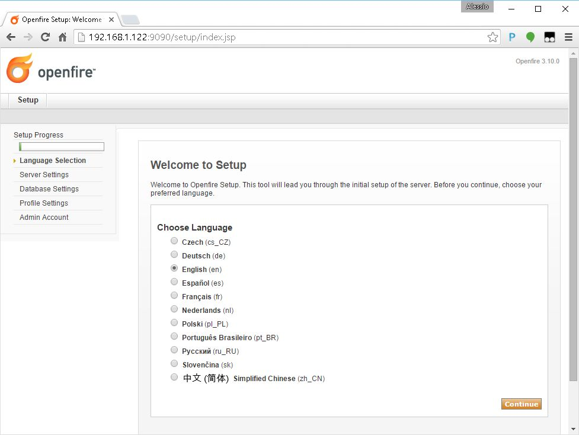
Specify the server Domain as
geoserver.org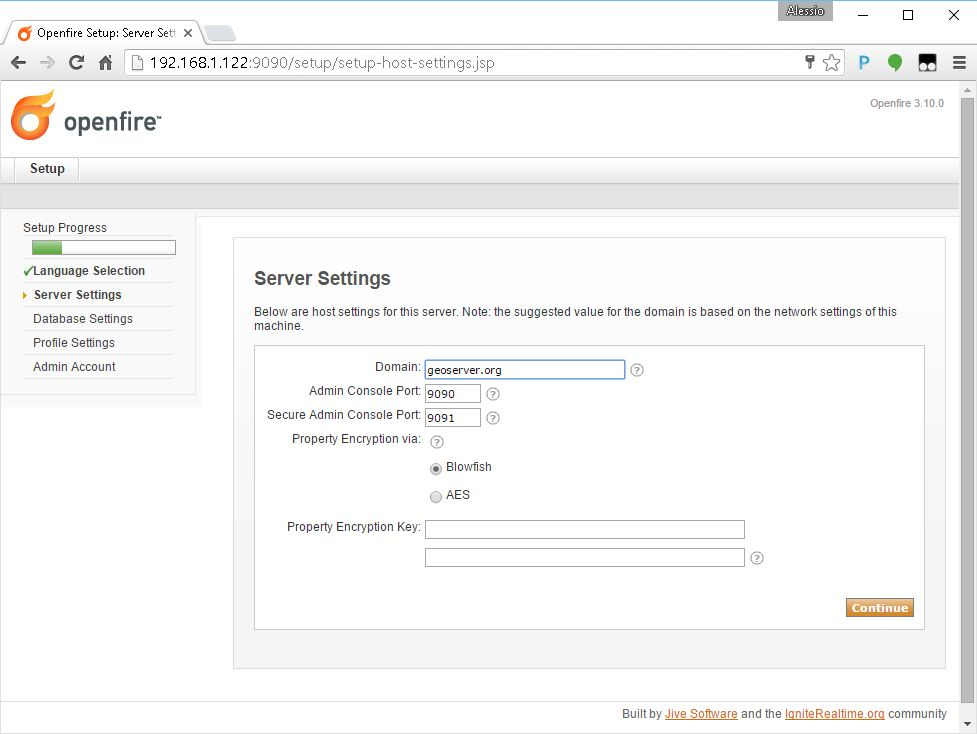
Choose the Standard Database Connection in the next section
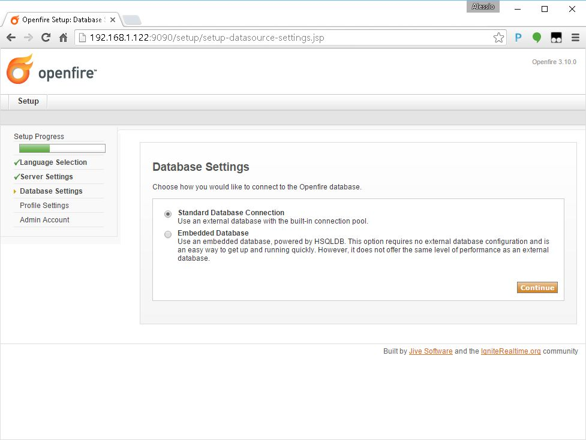
Provide the Database connection parameters for the PostgreSQL DB in the standard connection section.
The password for the user openfire is the same provided in the PostgreSQL DB setup (see above).
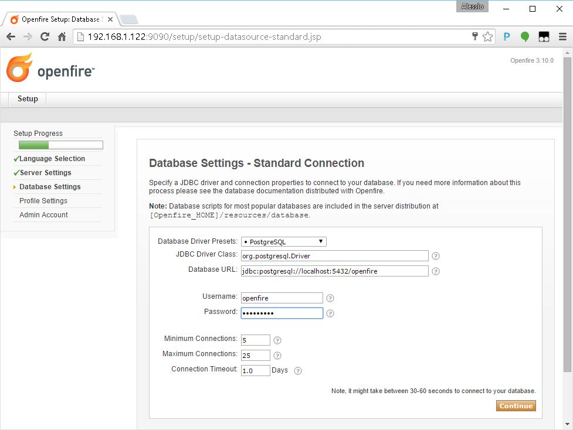
Note
Be sure the openfire database and user have been correctly created on PostgreSQL and the passwords provided (see above for instructions).
If there are no connection issues, choose Default value on the users profile settings section.
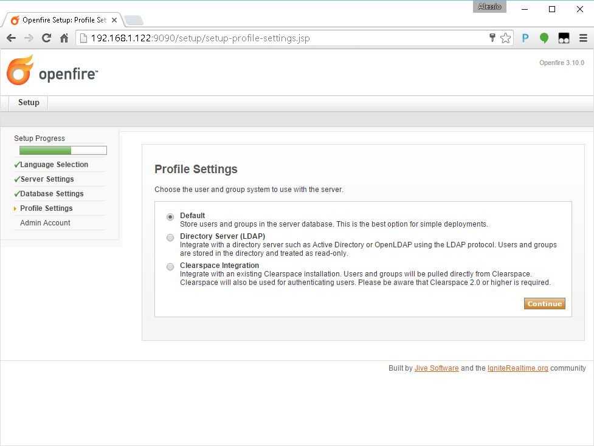
Create the Administrator account in the next section.
The password must match the one specified in the remoteProcess.properties file
R3m0T3wP5
The initial setup is now complete. Log into the system using the newly created admin account.
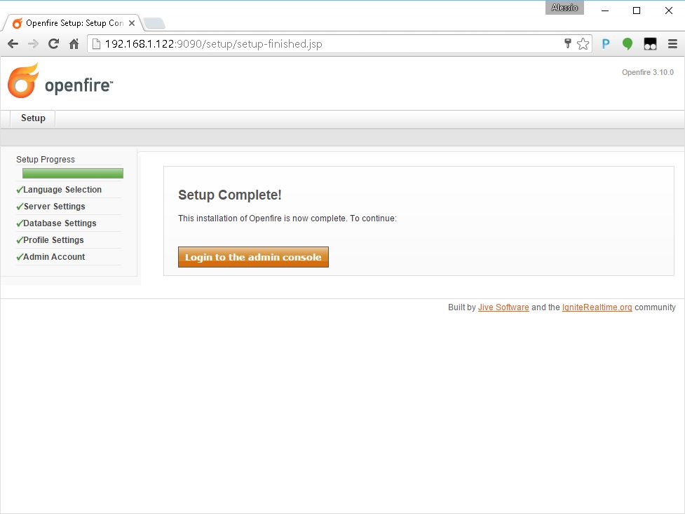
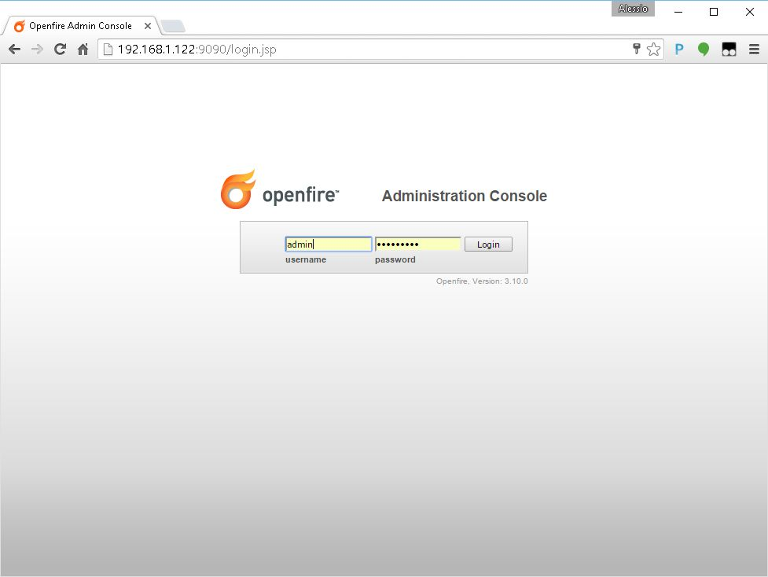
Move to the Server Certificates section of the Server Settings tab panel.
Warning
This passage is not needed anymnore on Openfire 4.0+. At least the management of the certificates is a bit different. Please refer to the specific Openfire documentation for more information.
Make sure that the self-signed certificates have been correctly generated and click on here in order to restart the server
Warning
This passage is not needed anymnore on Openfire 4.0+. At least the management of the certificates is a bit different. Please refer to the specific Openfire documentation for more information.
The same section now shows the server certificates and won't ask for another restart unless the certificates are generated again.
Update the Security Settings in order to allow the server accepting self-signed certificates on secured connections.
Warning
This passage is not needed anymnore on Openfire 4.0+. At least the management of the certificates is a bit different. Please refer to the specific Openfire documentation for more information.
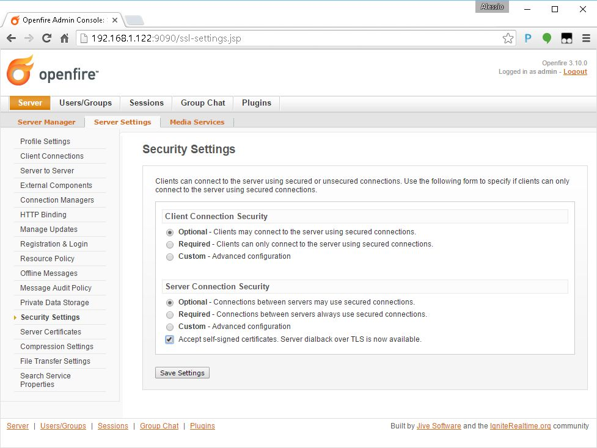
Create the default channel as shown in the next figure.
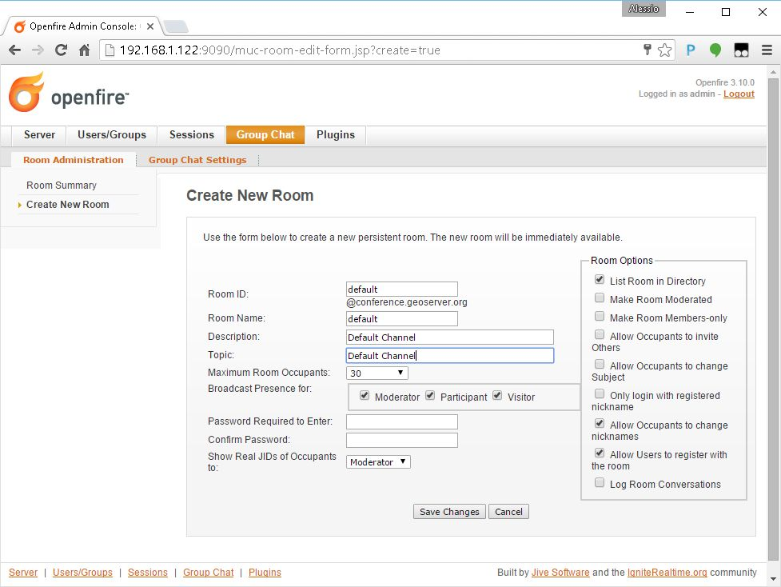
Create the management channel as shown in the next figure. Pay attention to the Room Options and specify the password for the channel
R3m0T3wP5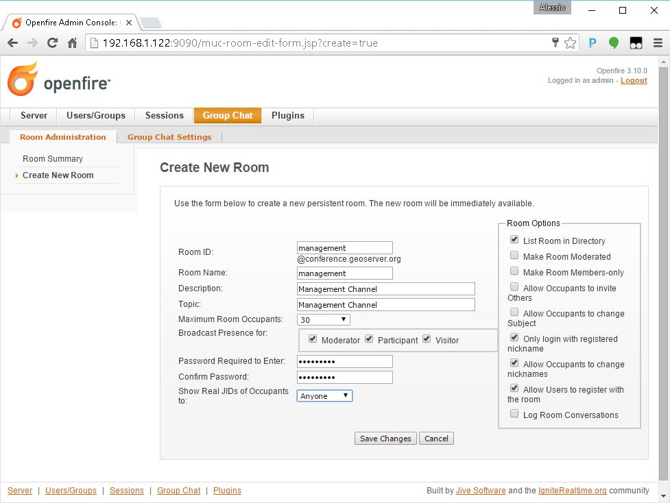
Double check that the channels have been correctly created and they appear in the Group Chat Rooms.
Restart GeoServer
After the GeoServer has successfully restarted, double check that it is connected to the server using the admin credentials.
It is very important that the user is shown as Authenticated.
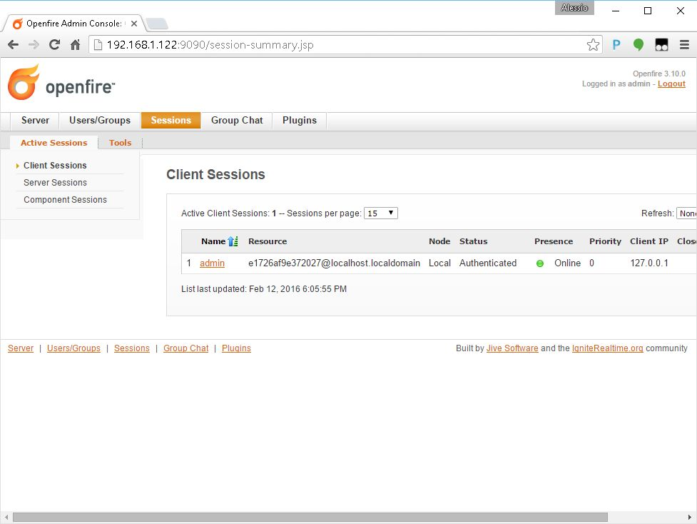
Check also that the user is registered to the XMPP channels created above.
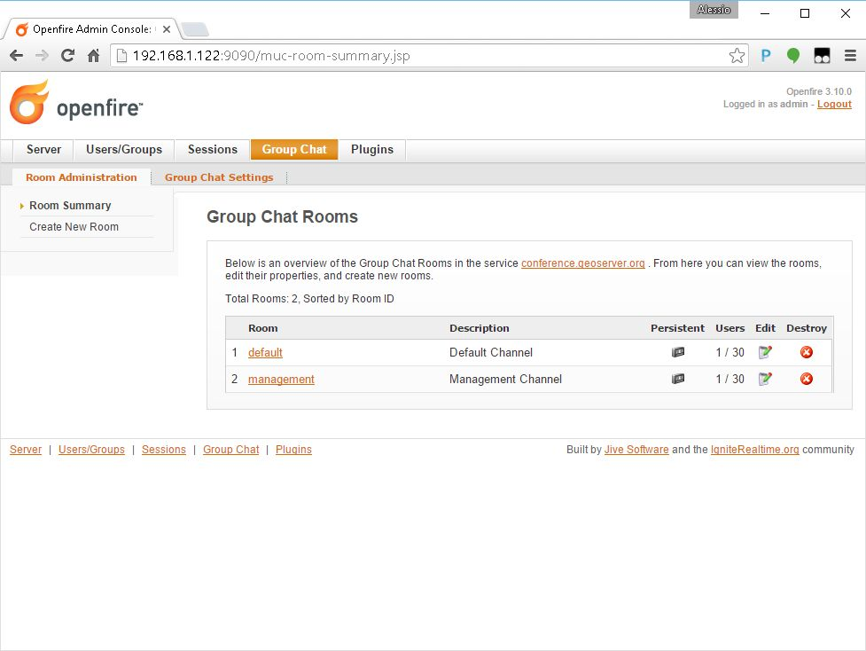
Firewall Rules For XMPP Ports
By default the TCP Ports where the XMPP Server is listening for incoming connection are closed to the outside. Therefore it is necessary to enable the Firewall rules at least for the Openfire default secured port 5223 unless it has been changed by the user during the server setup.
In order to do that issue the following commands:
# as root
# We need to open the firewall ports in order to expose the gui to the outside
$> firewall-cmd --permanent --zone=public --add-port=5222/tcp
$> firewall-cmd --permanent --zone=public --add-port=5223/tcp
$> firewall-cmd --reload
Forward Proxy to Apache HTTPD Server
The procedures described in this section allows to expose GeoServer via HTTPD through Apache HTTPD Server.
Those steps are not mandatory and the procedure may change accordingly to the final deployment on production systems.
In order to install Apache HTTPD Server proceed as follows:
# as root
$> yum -y install httpd mod_ssl
$> vi /etc/httpd/conf.d/forward-proxy.conf
ProxyRequests Off
ProxyPass /geoserver ajp://localhost:8009/geoserver
ProxyPassReverse /geoserver ajp://localhost:8009/geoserver
$> systemctl enable httpd.service
$> service httpd restart
Selinux, enabled by default, needs to be instructed to allow http network connections. This can be done by running the command:
Shared Folder through the NFS protocol
The next steps describe how to setup the system in order to expose a Shared Network Folder which will be used to store the outcomes of the remote processing.
The following procedures are not mandatory and the final deployment on the production system may be configured to use different protocols and frameworks to expose shared file-systems.
The setup and initial configuration of the NFS packages can be done by following the next procedure:
# as root
$> yum -y install nfs-utils
$> vi /etc/idmapd.conf
# The following should be set to the local NFSv4 domain name
# The default is the host's DNS domain name.
Domain = geoserver.org
Note
The domain specified above maybe different depending on the final system deployment and the production environment setup.
Creating and exposing a shared folder is possible by following the next steps:
- as root
- Create the physical folder structure to be exposed via the Network Filesystem
-
Modify the rights in order to allow
-
Once the physical folder is ready it must be exposed via the
exports
- write settings for NFS exports
- Restart the NFS services
Note
The host_ip must be the one of the host exposing the shared folder.
Selinux, enabled by default, needs to be instructed to allow NFS connections. This can be done by running the following commands: